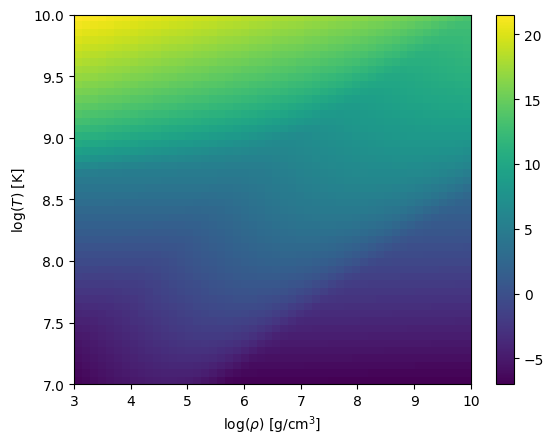

Neutrino Cooling
At high temperatures, pair, plasma, Bremmstrahlung, and photo neutrinos become important. These are often treated as a source term to an energy equation when integrating the temperature evolution due to reactions.
pynucastro implements the functions of Itoh et al. [1996] to incorporate these effects. In many codes, a routine called sneut5 was used for this implementation. pynucastro contains a port of that routine.
[1]:
from pynucastro.neutrino_cooling import sneut5, NeutrinoCooling
from pynucastro import Composition, Nucleus
Evaluating \(\epsilon_\nu\) for a thermodynamic state
We can evaluate the cooling term given a density, temperature and composition.
[2]:
rho = 1.e8
T = 2.e9
c = Composition([Nucleus("p"), Nucleus("a"), Nucleus("fe56")])
c.set_equal()
[3]:
snu = sneut5(rho, T, c)
print(snu)
773682819.5195054
This is the value in CGS units (erg/g/s)
If we want to see the breakdown of the different contributions, we pass full_output=True
[4]:
snu, scomps = sneut5(rho, T, c, full_output=True)
print(scomps)
splas: 537968613.1923463; spair: 131726610.15324067; sphot: 92135106.99413596; sbrem: 11852489.17978244; sreco: 0.0
Plotting \(\epsilon_\nu\) in the \(\rho\)-\(T\) plane
We can see the trend with thermodynamics state by using the NeutrinoCooling class
[5]:
nc = NeutrinoCooling()
fig = nc.plot(Tmin=1.e7, Tmax=1.e10, rhomin=1.e3, rhomax=1.e10,
abar=c.eval_abar(), zbar=c.eval_zbar())
